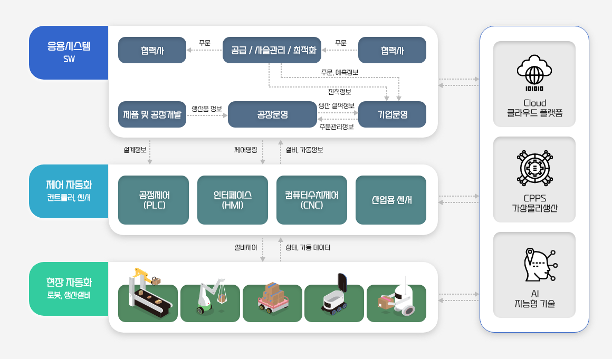

스마트공장의 정의
스마트공장이란 제품설계·개발, 제조 및 유통·물류 등 생산 과정에 디지털 자동화 솔루션이 결합된 정보통신기술(ICT)을 적용하여 생산성, 품질, 고객만족도를 향상시키는 지능형 생산공장을 말합니다.
- 제조의 모든 단계가 자동화·정보화되고 가치사슬 전체가 하나의 공장처럼 연동되어 자율적으로 최적 솔루션을 제안하는 사이버물리시스템 기반 지능형공장
- 소비자의 제품에 대한 요구를 실시간으로 제품 설계 및 생산 공정에 반영하여 고객별로 다른 제품을 생산하여 제공할 수 있는 지능적이고 유연한 생산체계 지향
스마트공장의 적용범위
스마트공장은 제품 기획·개발부터 양산까지, 주문에서부터 완제품 출하까지 제조 관련 모든 과정을 말한다. 응용 시스템뿐 아니라 현장자동화와 제어자동화 영역까지 공장 운영의 모든 부분을 포함하는 것입니다.
적용 범위
적용 범위 프로세스

스마트공장의 도입수준 정의
| 수준 정의 | 기존 수준 | 표준 | IoT대상 | 특성 | 조건(구축수준) | 주요도구 |
|---|---|---|---|---|---|---|
| Level5 | 고도화 | 자율 운영 | 작업자, 설비, 자재,운전조건+환경 | 맞춤 및 자율 (Customized) | 모니터링부터 제어, 최적화까지 자율로 진행 | 인공지능 AR/VR, CPS 등 |
| Level4 | 중간2 | 최적화 | 작업자, 설비, 자재, 운전조건 | 최적화 (Optimized) | 공정운영 시뮬레이션을 통해 사전 대응 가능 | 센서 제어기 최적화 도구 |
| Level3 | 중간1 | 제어 | 작업자, 설비, 자재 | 분석 (Analysed) | 수집된 정보를 분석하여 제어 가능 | 센서+분석도구 |
| Level2 | 기초 | 모니터링 | 작업자, 설비, 자재 | 측정 (Measured) | 생산정보의 모니터링이 실시간 가능함 | 센서 |
| Level1 | 점검 | 자재 | 식별 (Identified) | 부분적 표준화 및 데이터 관리 | 바코드 RFID |
스마트공장의 도입 절차
스마트공장의 적용기술
- (현장자동화·공장운영) 제조실행시스템 (Manufacturing Execution System)
- 제품 생산과정에서 생산계획 수립, 작업지시, 공정관리, 생산추적 및 이력 집계를 통한 생산성과분석 등의 기능을 수행하는 시스템 ⇒ 제품 품질 개선 및 생산 관리의 효율화를 통해 생산성 향상 효과
- (기업자원관리) 전사적자원관리 (Enterprise Resource Planning)
- 기업 전반에 걸쳐 인사, 재무, 회계, 재고, 구매, 거래 등의 주요 업무 프로세스와 자원을 관리하는 시스템 ⇒ 업무프로세스 개선 및 자원(자재, 재고 등) 관리 효율화 효과
- (공급사슬관리) 공급사슬관리 (Supply Chain Management)
- 공급망(supply chain)에 있는 기업 간에 제품, 정보 등의 재화가 이동하는 과정을 계획하고 관리하는 시스템 (계획 기능) 수요계획·운송계획·재고계획 등, (관리 기능) 주문관리·물류관리·유통관리 등 ⇒ 납기 준수율 향상의 효과
- (제품개발) 제품수명주기관리 (Product Lifecycle Management)
- 제품의 전 생명주기*에 걸쳐 제품 관련 정보와 프로세스를 관리하여 개발을 효율적으로 수행 가능하도록 하는 솔루션 제품 설계, 개발, 생산, 유통, 유지보수, 폐기까지의 과정 ⇒ 제품 설계 기간의 단축, 제품설계 데이터 관리 강화 등의 효과
- (에너지관리) 공장에너지관리 (Factory Energy Management System)
- 제조 과정에서 에너지효율을 향상시키기 위해 공장의 에너지 관련 모니터링, 데이터 취합 및 분석, 최적 제어를 수행하는 시스템 ⇒ 에너지 절감 효과
스마트공장의 주요 용어
| ICT (Information Communication Technology) | 정보통신기술, IT - Communication을 의미 |
|---|---|
| IoT (Internet of Things) | 사물인터넷, 인터넷을 기반으로 모든 사물을 연결하여 사람과 사물, 사물과 사물간의 정보를 소통하는 지능형 기술 및 서비스 |
| MES (Manufacturing Execution System) | 제조실행시스템, 제품의 주문을 받고 난후 제품이 완성될때까지 생산의 최적화를 위한 정보를 제공, 생산현장에서 발생하는 최신의 정보를 현장실무자나 관리자에게 보고, 신속한 응답을 통해 생산조건을 변화시키며 가치없는 요소를 감소시켜줌으로써 생산공정과 기능을 개선 |
| CPS (Cyber-Physical Systems) | 사이버물리시스템, 현실 세계의 다양한 물리, 화학 및 기계공학적 시스템을 컴퓨터와 네트워크를 통해 자율적, 지능적 제어 |
| PLC (Programmable Logic Controller) | 각종 센서로부터 신호를 받아 제어기에 신호를 보냄으로써 사람이 지정해둔 대로 로봇이 작동하도록 해주는 장치, 제어로직 프로그램을 실행할 수 있도록 고안된 시스템으로서 제어를 위한 입출력 장치를 포함 |
| PLM (Product Lifecycle Management) | 제품수명주기관리, 제품 설계도로부터 최종 제품 생산에 이르는 전체과정을 일관적으로 관리하는 시스템으로서 제품 부가가치를 높이고 원가를 줄이는 것이 목적 |
| SCM (Supply Chain Management) | 공급사슬관리, 물건과 정보가 생산자로부터 도매업자, 소매상인, 소비자에게 이동하는 전 과정을 실시간으로 한눈에 볼 수 있으며, 이를 통해 제조업체는 고객이 원하는 제품을 적기에 공급하고 재고를 줄일 수 있음 |
| POP (Point Of Production) | 생산시점관리시스템, 공장의 생산과정에서 기계, 설비, 작업자, 작업 등에서 시시각각 발생하는 생산정보를 실시간으로 직접 수집, 처리하여 현장관리자에게 제공하는 시스템 |
| ERP (Enterprise Resource Planning) | 기업자원관리 재무/회계, 자재/구매, 품질, 생산, 설비 등을 유기적으로 연계하여 관리하는 시스템 |
| FEMS (Factory Energy Management System) | 조선, 자동차, 섬유, 석유화학제품과 같은 제조업 등의 생산시설에서 사용하는 에너지를 최소화하기 위한 관리시스템, 생산활동 및 시설 유지에 사용되는 에너지를 모니터링, 분석, 원격 제어함으로써 에너지의 효율적 사용 도모 |
| FMEA (Failure Mode and Effect Analysis) | 고장형태 영향분석 방법론, 기계부품 (시스템요소)의 고장이 기계(시스템) 전체에 미치는 영향을 예측(결과 예지) 하는 해석방법으로, 기계부품 등의 기계요소가 고장을 일으킨 경우에 기계 전체가 받는 영향을 규명하는 방법론 |
출처 : 스마트제조혁신추진단 (https://www.smart-factory.kr/smartFactoryIntro)